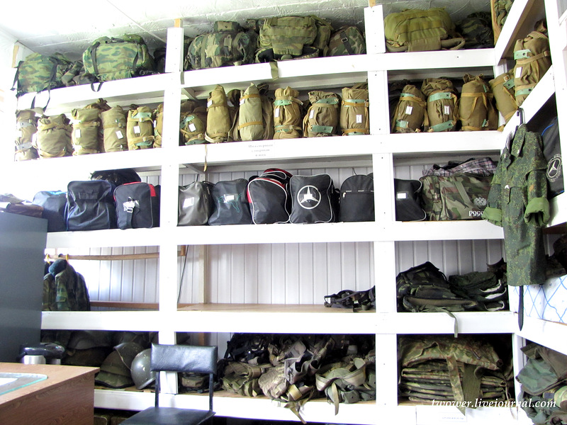

7 дней лета, билд 0.21с (отход от канона)
Страница 5 из 7 •  1, 2, 3, 4, 5, 6, 7
1, 2, 3, 4, 5, 6, 7
Стоит ли альтернативный первый день усилий по интеграции?
Re: 7 дней лета, билд 0.21с (отход от канона)
автор jet23 в Вс 16 Авг 2015 - 2:19
- Спойлер:
- не хватает цгшки в 2168 строке концовка Алисы "Отвезу тебя домой". scene cg epilogue_dv_good with dissolve.
jet23- Ньюфаг

- Сообщения : 1
Дата регистрации : 2015-06-02
Re: 7 дней лета, билд 0.21с (отход от канона)
автор openplace в Вс 16 Авг 2015 - 16:28
XOLODOS пишет:Openplace, если я правильно понял ваше высказывание по поводу занятия графической частью, то у меня предложение. Можете цвет иконок поменять с этого желтовато зеленого на классический оранжевый. Я думаю он смотрится на фоне всей карты куда приятнее. Конечно если это реально осуществить.
7dl-kun пишет:Это я сделать и сам смогу, если пойму, о каких иконках речь идёт... (=
Кажется, я понял, о чём речь. http://bl7dl.2x2forum.ru/t110p105-topic#16050 - здесь показано, как это будет выглядеть.XOLODOS пишет:Иконки всех обьектов желтые. А оранжевый ( из обычного БЛ) ИМХО смотрится лучше

openplace- Хикка

- Сообщения : 111
Дата регистрации : 2015-05-02
Re: 7 дней лета, билд 0.21с (отход от канона)
автор XOLODOS в Вс 16 Авг 2015 - 17:05

XOLODOS- Сыч

- Сообщения : 66
Дата регистрации : 2015-07-31
Возраст : 24
Откуда : Россия, Смоленская обл. г.Починок
Re: 7 дней лета, билд 0.21с (отход от канона)
автор HOXAJI в Вс 16 Авг 2015 - 20:26

HOXAJI- Ньюфаг
- Сообщения : 13
Дата регистрации : 2015-08-02
Re: 7 дней лета, билд 0.21с (отход от канона)
автор openplace в Вс 16 Авг 2015 - 20:41
Теперь осталось только ждать и надеятьсяXOLODOS пишет:Да) Именно) Это то что и хотелось)) Спасибо)
Советую глянуть причёсанный Лена-7дл-рут. Из понравившегося там - выбор, как именно читать плюс влияние кармы на собственно концовки (раньше действовало только для катапульты). В этом же билде - интеграция альтернативы во 2-й день.HOXAJI пишет:я еще до b билда не дошел, а тут уже c выкладывают =(
openplace- Хикка
- Сообщения : 111
Дата регистрации : 2015-05-02
Re: 7 дней лета, билд 0.21с (отход от канона)
автор HOXAJI в Вс 16 Авг 2015 - 21:58
Советую глянуть причёсанный Лена-7дл-рут. Из понравившегося там - выбор, как именно читать плюс влияние кармы на собственно концовки (раньше действовало только для катапульты). В этом же билде - интеграция альтернативы во 2-й день.
ух ты спасибо. расписал все лучше любого патчноута.
HOXAJI- Ньюфаг
- Сообщения : 13
Дата регистрации : 2015-08-02
Re: 7 дней лета, билд 0.21с (отход от канона)
автор Ленофаг Простой в Чт 20 Авг 2015 - 3:35
Автор! Круто обновил визуальную часть, всё входит на свои места как влитое, всё выглядит преотлично. Касаемо же текстов с хентаем - сломаю систему, скажу что так тоже хорошо, может даже лучше. Я вообще за платоническое, вотъ. Разве что дико проржался с выбора версии хентая в 4-м дне. Видел как-то, что ты выбрасывал на форум нечто подобное, мол "можно так сделать", но до последнего считал, что всё это ради лулзов. ОДНАКОЖ... Зато все довольны. Вообще все.
Спасибо за хороший настрой на ближайшее будущее. Универсальная панацея. Скажу спасибо, пожалуй
- традиционным своеобразным способом:
- альт день 1
70 - "Она смотр(ела)[ит] на меня озабоченно, и в то же время изо всех сил пытается скрыть смущение."
202 - "В её ласковой улыбке я углядел (не)что(-то) пугающее."//взаимоисключающие варианты
601 - "Я с интересом уставил(а)[ся] на мокрую щётку."
-----------------------------------------------------------------------
1057 sl "Как-никак, я помощница вожатой и отвечаю за пионеров."
1058 menu:
1059 "(+)Ясно. А я Семён.":
1060 window show
1061 $ meet('sl','Славя')//ctrl+x
1062 "Вежливо кивнул я, а девочка снова улыбнулась."
1063 sl "Прости, где мои манеры."
1064 show sl smile2 pioneer with dspr
1065 "Она кивнула и представилась наконец:"
1066 sl "Меня зовут Славяна, Феоктистова Славяна."//ctrl+v
1067 sl "Но ты, если хочешь, можешь звать меня Славей - я уже привыкла."
----------------------------------------------------------------------
день 2
----------------------------------------------------------------------
298 if (alt_day1_random_val != 1) and alt_day1_sl_conv: // на практике выходит, если alt_day1_random_val = 1, то идёт прыжок на ветку else, что не соответствует альт. первому дню
299 "Да и обычная форма, если уж на то пошло."
300 (else:) [elif alt_day1_random_val != 1 and not alt_day1_sl_conv:] //Может так?
301 "Купальник, опять же."
----------------------------------------------------------------------
1502 - "Приоритетным зданием по списку значились клубы."
1503 if alt_day1_sl_conv [and alt_day1_random_val != 1]:
1504 th "Клубы… Не то ли пафосное здание, которое мы со Славей встретили при входе?"
1505 (else) [elif alt_day1_random_val != 1 and not alt_day1_sl_conv:]
1506 th "Что-то знакомое… Не тот ли домик у ворот, где Ульянка бегала с саранчой?"
1507 "Он!"
1508 th "Пойду к кибернетикам."
1509 th "Может, сумею у них разжиться какими-нибудь наушниками."
1510 "Без музыки бродить было скучновато, а сволочной силикон отказывался держаться в ухе."
1511 if alt_day1_sl_conv[and alt_day1_random_val != 1]:
1512 "В крайнем случае хотя бы штекер уворую и через усилитель послушаю."
1513 (else:)[elif alt_day1_random_val != 1 and not alt_day1_sl_conv:]
1514 "Несколько минут спустя я остановился у здания клубов и невольно улыбнулся, ещё раз вспомнив ту самую саранчу."
1515 "Впрочем, по сравнению с инопланетной дрянью в тарелке, саранча выглядела довольно безобидно."
------------------------------------------------------------------------
2425 - th "Им всем и правда пофигу, иду ли я за ними, или они настолько уверены в собственной неотразимости?( )"
3268 - "Кажется, сегодня пионеры были голоднее обычного. Во всяком случае, свободных мест было здорово меньше, чем на завтраке или даже вчерашнем ужине…({w} Том самом, с малайзийской кухней.)"
[if alt_day1_random_val != 1
extend "Том самом, с малайзийской кухней."
else
\\вариант для Семёна с альт. первого дня идёт сюда]
3281 - "Вопрос лишь в том, от кого будет меньше всего вреда…"// Наверное, стоит согласовать эту строчку в падежах с последующими вариантами выбора?
3394 - me "Ну это ещё ничего.[пробел сюда, ибо дальше extend]"
4010 - "Хотя вряд ли мой тёзк(и)[а] из сна имел хоть какое-то отношение ко мне."
5003 - "Ведущ(и)его немного смутил эпитет, но крыть было нечем, и он согласился."
5358 - us "Жаль, конечно, что ты новичок, и мне совсем нечего тебе припомнить[.]"
5572 - "Интересно, она понимает, что только что призналась в жульничестве(.)[?]"
5900 - "И если в долговременной игре опытный игрок всегда победит просто потому, что прикидывает количество карт в колоде, возможные комбинации и шансы их получить…(.)"
5905 - [us] "Я победила! И я победю в турнире!"
----------------------------------------------------------------------
день 3
______________________________________________________________________
8950 - "То, что мы только что договорились о танце, дела не меняло совершенно."
8951 - th "В конце концов, в бальную книжку меня так и не занесли."//Но ведь есть 7581-7583 строки...
11344 - me "Вот как? Что ж…(.) Чем обязан?"
Леночка-рут
575 - me "Я не очень хорошо отношусь, когда мне говорят, что мои слова не стоят ничего."//Мб лучше бы звучало: "Мне не очень нравится, когда ..."
630 - "А я… Ну, я делаю вид, что хочу забраться ей под платье - не [с](в) целью полапать там или ещё что."
653 - ... мне, в стареньком «автоджеке», ей - в красном пальтишко с капюшоном(.)[,] который я почему-то всегда называл скафандром.
727 - "Алиса. Что бы ей ни надо было - ниче(го)[м] хорошим оно не могло для меня зако[н]ч(н)иться."
780 - "Алиса только фыркнула..[.]"
2072 - "Немного подумав, она запустила (руку) руку в коробку и, достав оттуда фант, развернула."
3460 - Где-то там неплохо бы сменить спрайт Лены тоже, ибо она стоит в шокированном виде весь разговор
4183 - Наверное, нужно вставить эту строку между 4189 и 4190
4514 - По тексту говорится, что столовая опустела, но в 4518 строке показывается int_dining_hall_people_sunset вместо логичного int_dining_hall_sunset, после чего шум столовой смолкает и герои двигают столы.
4537 - бе(й)зде[й]ствовало
______________________________________________________________________
[if alt_day1_random_val != 1:]
4358 - "С прошлого моего визита здесь ничего не изменилось."
4359 - "Всё те же уходящие вдаль полки с формой, бельём и постелями, рохля по правому краю и заставленный коробками закуток, откуда я вытащил Славю ещё в первый мой день здесь."
else
\\вариант для альт. первого дня идёт сюда
______________________________________________________________________
5374 - тут можно спрайт поменять для красоты
5884 - не ми[л]уемся на людях…
6492 - [me]"Значит, сам умоюсь[.]"
6531 - здесь надо остановить шум волн, не знаю какая команда за это в коде отвечает
6742 - ос(о)вобождённое
______________________________________________________________________
7050 - label alt_day5_un_7dl_runaway:
7051 - window hide
7052 - scene bg ext_path_night with dissolve //ctrl+x
7053 - $ alt_chapter(5, u"Лена. 7ДЛ. Побег")//ctrl+v
7054 - play music music_list["reflection_on_water"] fadein 3
7055 - show un normal pioneer with dspr//иначе здесь Лена будет на чёрном фоне
______________________________________________________________________
7380 - энерг(и)ия
8244 - dreamgirl "Славя повлияла на него, научив делать всё последовательно[-](последовательно) и на совесть."//два варианта
______________________________________________________________________
[if alt_day1_random_val != 1:]
8848 - me "Конечно, шутка!{w} Ты забыла в каком виде меня с автобуса сняла?"
else
\\Вариант с Семёном, встреченном Славей на пристани в пальто после обливания Двачевской в альт. первом дне идёт сюда
9277 - Где-то тут надо выключить шум волн, иначе он будет всю дискотеку. Я по традиции не знаю команду
9311 - Краснота должна накладываться по идее поверх спрайта танцующих Мику с Семёном, но на деле она накладывается сразу на БГ - танцующий спрайт здесь не показывается и краснота летает в воздухе
Леночка - эпилог
55 - voice "Оно рябит и идёт телеснегом – потому, что сознание не умеет строить картинки по алгоритму, который используют мониторы. Это значит, что ты спишь. ПРОСНИСЬ!"// А что если эффект ряби пустить не сначала, а где-нибудь здесь, для пущего погружения читающего? Эх, я бы проснулся...
381 - Здесь уже не было мест(о)[а] невинной детской дружбе.
1151 - me " {i}Да брось…{/i} (.)"

Ленофаг Простой- Сыч
- Сообщения : 86
Дата регистрации : 2015-03-09
Возраст : 21
Re: 7 дней лета, билд 0.21с (отход от канона)
автор 7dl-kun в Чт 20 Авг 2015 - 9:01
- Спойлер:
- Всё ещё жду фида по альтернативной леноконцовке...

7dl-kun- Находка для шпиона

- Сообщения : 3026
Дата регистрации : 2014-09-07
Откуда : здесь столько наркоманов?
Re: 7 дней лета, билд 0.21с (отход от канона)
автор Ленофаг Простой в Чт 20 Авг 2015 - 14:27
Ленофаг Простой- Сыч
- Сообщения : 86
Дата регистрации : 2015-03-09
Возраст : 21
Re: 7 дней лета, билд 0.21с (отход от канона)
автор 7dl-kun в Чт 20 Авг 2015 - 14:38
7dl-kun- Находка для шпиона
- Сообщения : 3026
Дата регистрации : 2014-09-07
Откуда : здесь столько наркоманов?
Re: 7 дней лета, билд 0.21с (отход от канона)
автор Ленофаг Простой в Чт 20 Авг 2015 - 14:39
Ленофаг Простой- Сыч
- Сообщения : 86
Дата регистрации : 2015-03-09
Возраст : 21
Re: 7 дней лета, билд 0.21с (отход от канона)
автор Moonshine в Чт 20 Авг 2015 - 23:17
- Спойлер:
Увидал, что появилась абсолютно новая концовка, и решил глянуть подновленный Лена-рут вкупе с подредактированным альтернативным первым днем. Внесенные правки действительно сделали его(день) лучше.
Измененная хентай-сцена весьма органично вписалась. Как будто так и было всегда. Зря побаивался, что выйдет пресно и пусто.
Подновленная «Одно целое» тоже понравилась. Возврат к записи, на мой взгляд, отличная идея. Мне этот момент всегда казался самым сильным в руте. И его повтор в концовке сделал её лучше. А также очень понравился арт Лены в машине.
Новую с чеком по карме в этот раз получить не удалось, прочел только в коде. Пока от оценки воздержусь, нужно получить в игре. Для полного погружения. Но выглядит многообещающе. Действительно исполнение всех мечт и на 146% использованный шанс.
Но в связи с этим чеком возник вопрос. Дает ли альтернативный первый день такие же возможности по набору кармы, как и классический? Не охота сейчас лезть просчитывать.
Плохую не перечитывал, а выходить на нее – увольте. Там были изменения?
Ну а теперь о том, что, как мне показалось, не стыкуется.
Второй день, перед завтраком. Напоминание Славе о её предложении. Но ведь не поступает никакого предложения в альтернативном первом дне. Хотя тут мог и упустить что-то.
День второй. 3268 «Том самом, с малайзийской кухней». Но в альтернативном первом дне экзотических блюд не предлагают.
День четвертый. В районе 958. Когда играет Bloodhound gang, не отключается игравшая до этого фоновая музыка, и происходит наложение. Перегружал более ранний сейв – та же петрушка. Может, тут только у меня сбой возник.
День пятый. 7115 "Значит, ты не первый год здесь?". Уже спрашивал в первый день.
День шестой. 7692 и 7693. Тут немного не понял. В записке раньше было что-то типа «Ищи меня там, где мы впервые стали ближе». И сейчас Семен ведет себя так, будто прочел именно это. Однако говорится, что написано лишь «В тайнике».
9496 Тут, видимо, отсылка к классическому первому дню. Для альтернативного не подходит.

Moonshine- Маргинал

- Сообщения : 341
Дата регистрации : 2015-05-05
Re: 7 дней лета, билд 0.21с (отход от канона)
автор openplace в Пт 21 Авг 2015 - 1:41
Есть некоторые нестыковки по Электронику.
- а именно:
alt_day2.rpy- Код:
1464 else:
1465 "К Электронику добавилась девочка-пулемёт. Что дальше?"
- Код:
if alt_day1_random_val = 1 or alt_day2_lib_done:
"К Электронику добавилась девочка-пулемёт. Что дальше?"
else
pass
- Код:
4164 "А в центре всей толкучки стоял Электроник."
- Код:
if alt_day1_random_val = 1 and not alt_day2_lib_done
$ meet('el','Электроник')
Ну и в 4858- Код:
"Карты у нас есть, все на местах. Начинаем турнир!"
- Код:
el "Карты у нас есть, все на местах. Начинаем турнир!"
openplace- Хикка
- Сообщения : 111
Дата регистрации : 2015-05-02
Re: 7 дней лета, билд 0.21с (отход от канона)
автор openplace в Пт 21 Авг 2015 - 23:41
- alt_uv_route.rpy:
- 1077 изрядно
1197 Войдя в столовую, я огляделся
1252 на двадцать пять лет позже, в будущем
1472 В общем-то, мы это предполагали
1820 Наконец, я набрался храбрости
2055 Последнее, что я почувствовал,
2747 Юлина
3926 el "Может, он ушёл
3962 cs "Да-да, прости, Ольга,
4030 может, и сейчас всё обойдётся
4475 "Она кивнула на Шурика, который уже вовсю спал
openplace- Хикка
- Сообщения : 111
Дата регистрации : 2015-05-02
Re: 7 дней лета, билд 0.21с (отход от канона)
автор Chess в Пт 21 Авг 2015 - 23:52

Chess- Находка для шпиона
- Сообщения : 3798
Дата регистрации : 2014-10-05
Откуда : Город на краю света
Re: 7 дней лета, билд 0.21с (отход от канона)
автор openplace в Сб 22 Авг 2015 - 1:00
Бывает.Chess пишет:Да в рот компот! Стопицот раз ведь на ошибки прогоняли!
openplace- Хикка
- Сообщения : 111
Дата регистрации : 2015-05-02
Re: 7 дней лета, билд 0.21с (отход от канона)
автор LRS в Вс 23 Авг 2015 - 10:10
- Спойлер:
- I'm sorry, but an uncaught exception occurred.
While running game code:
File "game/scenario_alt/alt_day2.rpy", line 521, in script
File "game/scenario_alt/alt_day2.rpy", line 521, in python
File "game/scenario_alt/res/alt_res_script.rpy", line 27, in python
Exception: Expected an image, but got a general displayable.
-- Full Traceback ------------------------------------------------------------
Full traceback:
File "D:\Alcohol 120%\VN\Бесконечное лето\everlasting_summer-1.1\renpy\bootstrap.py", line 265, in bootstrap
renpy.main.main()
File "D:\Alcohol 120%\VN\Бесконечное лето\everlasting_summer-1.1\renpy\main.py", line 327, in main
run(restart)
File "D:\Alcohol 120%\VN\Бесконечное лето\everlasting_summer-1.1\renpy\main.py", line 78, in run
renpy.execution.run_context(True)
File "D:\Alcohol 120%\VN\Бесконечное лето\everlasting_summer-1.1\renpy\execution.py", line 509, in run_context
context.run()
File "D:\Alcohol 120%\VN\Бесконечное лето\everlasting_summer-1.1\renpy\execution.py", line 288, in run
node.execute()
File "D:\Alcohol 120%\VN\Бесконечное лето\everlasting_summer-1.1\renpy\ast.py", line 1009, in execute
show_imspec(self.imspec, atl=getattr(self, "atl", None))
File "D:\Alcohol 120%\VN\Бесконечное лето\everlasting_summer-1.1\renpy\ast.py", line 927, in show_imspec
expression = renpy.python.py_eval(expression)
File "D:\Alcohol 120%\VN\Бесконечное лето\everlasting_summer-1.1\renpy\python.py", line 1338, in py_eval
return eval(py_compile(source, 'eval'), globals, locals)
File "game/scenario_alt/alt_day2.rpy", line 521, in <module>
scene expression Noir("int_dining_hall_people_sunset", brightness = -0.2, saturation = -0.4) at zentercenter
File "game/scenario_alt/res/alt_res_script.rpy", line 27, in Noir
return im.MatrixColor(ImageReference(id), im.matrix.brightness(brightness) * im.matrix.tint(tint_r, tint_g, tint_b) * im.matrix.saturation(saturation))
File "D:\Alcohol 120%\VN\Бесконечное лето\everlasting_summer-1.1\renpy\display\im.py", line 1046, in __init__
im = image(im)
File "D:\Alcohol 120%\VN\Бесконечное лето\everlasting_summer-1.1\renpy\display\im.py", line 1534, in image
return image(arg.target, loose=loose, **properties)
File "D:\Alcohol 120%\VN\Бесконечное лето\everlasting_summer-1.1\renpy\display\im.py", line 1549, in image
raise Exception("Expected an image, but got a general displayable.")
Exception: Expected an image, but got a general displayable.
Windows-post2008Server-6.2.9200
Ren'Py 6.16.3.502
Everlasting Summer 1.0
LRS- Ньюфаг
- Сообщения : 12
Дата регистрации : 2015-05-03
Возраст : 29
Re: 7 дней лета, билд 0.21с (отход от канона)
автор 7dl-kun в Вс 23 Авг 2015 - 10:28
7dl-kun- Находка для шпиона
- Сообщения : 3026
Дата регистрации : 2014-09-07
Откуда : здесь столько наркоманов?
Re: 7 дней лета, билд 0.21с (отход от канона)
автор openplace в Вс 23 Авг 2015 - 18:55
- Спойлер:
alt_day3.rpy
5782 кое-где даже пришлось привлекать к помощи Шурика с Электроником, однако в результате я управился
6082 "Тяжёлый лом вонзился в песчаник, легко прокалывая слой дёрна." - таки в песок. Песчаник - горная порода, в грубом приближении - очень плотно слежавшийся до окаменения за многие и многие эпохи песок различного состава. Сеня заколебался бы песчаник долбать, особенно если это Дрищ. - Код:
11127 else:
11128 dreamgirl "Сначала мы наблюдаем нижнее белье, перешли непосредственно к стриптизу."
- Код:
elif alt_day1_random_val != 1 and alt_day1_dock:
dreamgirl "Сначала мы наблюдаем нижнее белье, перешли непосредственно к стриптизу."
alt_zneutral_route.rpy
2355 mi "Объявляю концерт «Дети - взрослым» открытым!" - здесь запятая не нужна.
openplace- Хикка
- Сообщения : 111
Дата регистрации : 2015-05-02
Re: 7 дней лета, билд 0.21с (отход от канона)
автор Ленофаг Простой в Пн 24 Авг 2015 - 1:30
- ещё порция вычитки:
- ПРОЛОГ
51 - "Но утро уж[е] вступало в свои права - не прошло и двух минут, а я добрался до ванной."
ДЕНЬ 1
246 - Ожидаемо не нашло, но совесть очистил..[.]
559 - "Нетерпеливая девочка буквально вихрем протащила меня по лагерю![пробел]"
___________________________________________________________________________________
1155 "Не слушая моих возражений, блондинка затащила меня в домик."
1156 "Внутри он выглядел именно так, как и ожидалось — две кровати, столик, стулья, пара шкафчиков и постер с несравненным Жаном Марэ в роли Фантомаса."
1157 "Ничего сверхъестественного, хотя по части бардака, этот домик влёгкую мог потягаться с моей квартирой."
1158 "Возле окна стояла девушка примерно моего возраста и что-то читала в ежедневнике. {w}И, разумеется, как и всех прочих представителей прекрасного пола, встреченных мной тут, природа не обделила её ни внешностью, ни фигурой."
1159 $ meet('mt','Ольга Дмитриевна')//ctrl+x
1160 th "Хоть это радует — помирать буду в компании прекрасных дам. Если буду, конечно."
1161 mt "А вот и ты."
1162 mt "Когда я выходила из автобуса, ты ещё спал. Неужели только проснулся?"
1163 me "Эм… Ну, да."
1164 mt "Всё с тобой ясно, засоня."
1165 show mt smile pioneer with dissolve
1166 mt "Меня зовут Ольга Дмитриевна, и я твоя вожатая."
ctrl+v
1167 "Она улыбнулась, сводя всё к шутке. Ну а я решил подыграть фарсу."
___________________________________________________________________________________
1681 dreamgirl "Бывшего."
1682 th "Что?"
1683 dreamgirl "Бывшего возраста."
[if (loki or herc):]
1684 th "А ты ещё кто такой?"
1685 dreamgirl "Твоя интуиция, балда."
[else:]
//вариант для Дрища, уже знакомого с надоедливым внутренним голосом, идёт сюда
___________________________________________________________________________________
2082 - me "(пробел)А как же режим, график и всё такое? Столовая закрыта."
___________________________________________________________________________________
2530 menu:
2531 "Подойти":
2532 window hide
2533 scene d1_un_book with dissolve
2534 $ lp_un = lp_un + 1
2535 window show
2536 "Я встал и подошёл к ней поближе."
2537 if [alt_day1_random_val != 1 and] not alt_day1_alt_chase: // иначе для оригинального первого дня выполняется
2538 "Услышав мои шаги, девушка подняла голову."
2539 window hide
2539 scene bg ext_square_night
2540 show un shy pioneer
2541 with dspr
2542 window show
2543 un "Ой."
2544 "Она смущённо улыбнулась."
2545 un "Т-ты меня напугал."
2546 "Покопавшись в карманах, она достала некий плоский предмет и протянула его мне."
2547 un "В-вот…"
2548 me "Смарт! Откуда он у тебя?"
2549 un "На площади, когда побежала…"
2550 un "Наверное, уронил."
...
2606 if [alt_day1_random_val != 1 and] not alt_day1_alt_chase://аналогично
___________________________________________________________________________________
ДЕНЬ 2
985 - label alt_day2_map_prepare://Ленофаг за равноправие! Пусть можно будет подойти не только к 23-му, но и к 13-му домику. Ну и к 3-му и 12-му тоже, да.
2960 - здесь идёт проверка условий чтобы выявить провожатого. Отсутствует вариант для alt_day2_rendezvous == 5 and not alt_day2_club_join_musc (пошёл один, не вступил в музкружок). Посему - Прыжок с 2958 строки на 2997
8402 - "Она что-то ещё бессвязно лепетала, но я сделал единственно верное, что возмож[н]о было."
ЛЕНА-РУТ
222 "Задача-минимум - дожить до завтрака!"
//тут раньше ещё строка была "Задача-максимум - найти Лену."
223 th "Кто бы ещё дал мне её искать…"
___________________________________________________________________________________
2387 - А вот в Мику руте такой вброс о сущности Мику сопровождался истерикой и СПГС. "Семёны волнуются, говорят лагерь-то НЕНАСТОЯЩИЙ!"
2411 - погняла//подняла (погнала)
4715 - mt "Если бы чуть позже пришла, то у тебя вообще бы ничего в голове (о)не [о]сталось."
4791 - Пиши про объединение, артистов, технику и прочую ерунду. [Хотя...]Про артистов лучше не пиши - а то знаю я тебя.
4802 - так и не расставша[я]ся с мыслью
5176 - 5179 надо команду, отвечающую за выключение фоновых звуков, ту самую которую я не знаю
5235 - un "А когда из-под карандаша спрыгнула она как живая…"
7356 - (me) "Я перевёл взгляд (с ней) на неё, а она уже расстегивала рубашку."
7363 - Мог ли я представить, что в маленько(й)[м] хрупко(й)[м] теле может быть столько энергии? Реально ли вообразить, что тихая, скромная дев(ч)о[ч]ка окажется настолько страстной в любви?
7367 - от самого главного момента в нашей жизни на(м)[с] отделяли
___________________________________________________________________________________
9502 - (th)[me] "Моё."
9503 - "Девочка тихонько мурлыкнула и прильнула ко мне."
9504 - un "Нет. Это ты - моё.
ЛЕНА-КОНЦОВКА
125 - ни признаваться – не в чем.[пробел]{w}Я распахиваю настежь
1497 - себя-настоя(ю)щую
- по новой Лена - концовке:
- На моё ИМХО, концовка получилась довольно трогательная, однако по сравнения с первой - очень уж короткая. Ещё не очень понятен был момент в автобусе: вот Лена тает на наших глазах, вот мы вроде как печально расстаёмся с ней очень и очень надолго, ибо грядёт разлёт между мирами (иначе зачем она тает-то???), но вот через пару строк в тексте появляется Славя. Тааак. Потом ВНЕЗАПНО batya Лены тоже светится в кадре и помогает герою. Эээ... Эээээ... Где-то между растаявшей в воздухе Леной и ниоткуда нашедшим героя batyeй Лены должен быть огромный кусок событий, включающий долгожданную встречу двух влюблённых, разве нет?
Ещё из пожеланий - можно сделать несколько уникальных сюжетных строк для разных ролей. Например, Герк весь пролог упивался идеей о том, как здорово бы вернуться в прошлое, имея за плечами недюжинный жизненный опыт. И тут по тексту, как раз - Семён идёт в армию. И Герк отслужил второй раз, смотря на происходящее сквозь призму всё тех же прожитых лет. Поэтому в этот раз он пошёл наперекор судьбе: войска не смогли уничтожить в нём личность и любовь к жизни.
Локи, в прошлой жизни успешно похоронивший себя как романтика получил тихую семейную жизнь - то чего ему всегда недоставало. За долгие годы в СССР он сменил взгляд на вещи, на людей.
Не знаю, правда, что предложить по Дрищу...
Совсем хорошо - сделать отдельную плашку под эту ачивку. Я бы мог, например.
Ленофаг Простой- Сыч
- Сообщения : 86
Дата регистрации : 2015-03-09
Возраст : 21
Re: 7 дней лета, билд 0.21с (отход от канона)
автор peregarrett в Пн 24 Авг 2015 - 2:04
Если получить отказ в обходе с Леной (не так поговорил вчера на площади) и идти в одиночестве, то на сцене пропускается кусок с явлением Алисы. Сразу перепрыгиваем к "Я уже сворачиваюсь." К Мику не вступал, вот и не угодил ни в одно из условий

peregarrett- Находка для шпиона
- Сообщения : 3264
Дата регистрации : 2014-09-07
Возраст : 36
Re: 7 дней лета, билд 0.21с (отход от канона)
автор peregarrett в Пн 24 Авг 2015 - 11:30
- Код:
"Ольга Дмитриевна была проинструктирована о том, как подключить машинку - и я лично дал ей заслушать то, что хотел услышать в качестве прощального медляка."
"Она немного поморщилась с видом «Фе, буржуйская музыка», но согласилась поставить трек в качестве закрывающего на дискотеке."
К тому же, если собираемся дежурить с Леной в медпункте - какое еще закрытие дискотеки? Нас там не будет, а излишним альтруизмом Семен вроде не страдает.
Про средство от головной боли - после альтернативного дня Семен уже в курсе, что именно лежит в верхнем ящике стола, поэтому недоумевать после фразы Виолы по идее не должен. Или в медпункте тоже должен вспомнить что к чему.
peregarrett- Находка для шпиона
- Сообщения : 3264
Дата регистрации : 2014-09-07
Возраст : 36
Re: 7 дней лета, билд 0.21с (отход от канона)
автор peregarrett в Вт 25 Авг 2015 - 11:33
лена-рут, дорога к костру
6212 - полений? Поленьев, наверно.
6320 - флешбек со Славей ушел под условие бэд-концовки, а без него получается прореха. Надо хоть пару слов про этот эйдетический образ сказать. Поцелуй представить, например, чтоб все невинно было.
6780: if alt_day2_club_join_nwsppr and not alt_day5_un_7dl_club_day: - я так понял, это условие на то, что не ходили расчищать поляну? Тогда надо добавить not (loki or herc).
7052: надо alt_chapter и scene поменять местами, а то после заставки остается черный фон.
7356: me "Я перевёл взгляд с ней на неё, а она уже расстегивала рубашку." - me не нужно.
И дальше черный фон - ладно, ок, но потом на этой черноте появляется Лена. Тут уж либо фон какой-нибудь, либо без спрайтов.
peregarrett- Находка для шпиона
- Сообщения : 3264
Дата регистрации : 2014-09-07
Возраст : 36
Re: 7 дней лета, билд 0.21с (отход от канона)
автор 7dl-kun в Вт 25 Авг 2015 - 18:27
Ну не нравился мне старый склад, не нравился. Нагуглить во всезнающем бельевой склад или какой-нибудь Laundry/bed clothes store практически невозможно, там такой хлам выдаёт, что из него даже мэдскилл не сделаешь. А мне нужен именно бельевой склад, как я его представляю - большое помещение с деревянными трёхэтажными полками, на которых живут матрацы и постельное бельё. Коробкам, паллетам и прочей логистике там не место, ведь в большинстве случаев "ценный груз" переносится в виде тюков по-цыгански.peregarrett пишет:Кстати, судя по новому фону, Славин склад тоже с подпространством шутки шутит. Снаружи - типичная развалюшка, а изнутри - трехэтажные хоромы! Чем старый-то сарай не устроил?
7dl-kun- Находка для шпиона
- Сообщения : 3026
Дата регистрации : 2014-09-07
Откуда : здесь столько наркоманов?
Re: 7 дней лета, билд 0.21с (отход от канона)
автор peregarrett в Вт 25 Авг 2015 - 19:00
7dl-kun пишет:большое помещение с деревянными трёхэтажными полками, на которых живут матрацы и постельное бельё
- Что-то типа этого? :

peregarrett- Находка для шпиона
- Сообщения : 3264
Дата регистрации : 2014-09-07
Возраст : 36
Страница 5 из 7 • 1, 2, 3, 4, 5, 6, 7